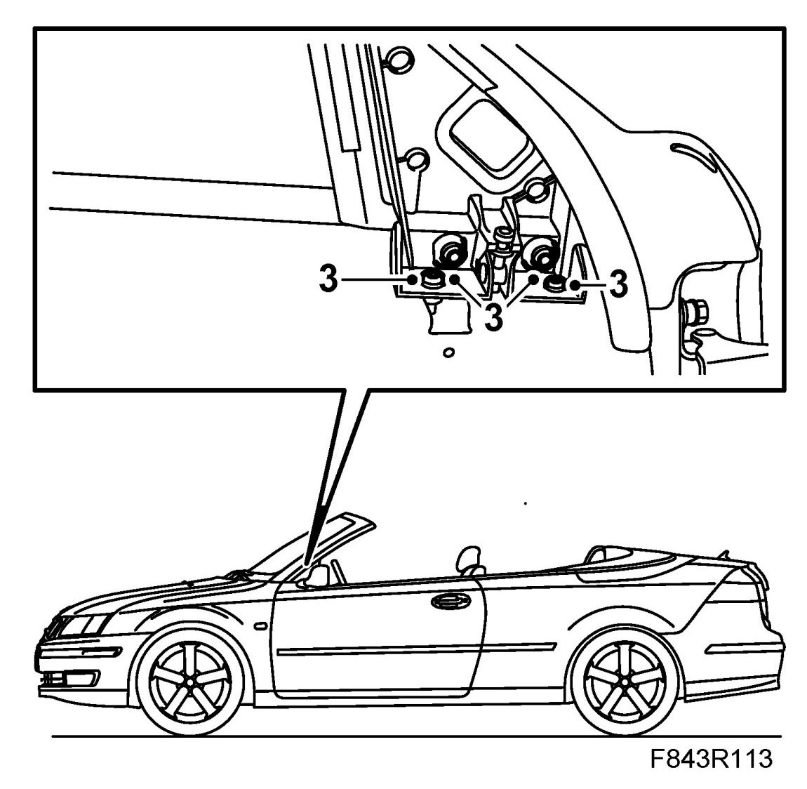
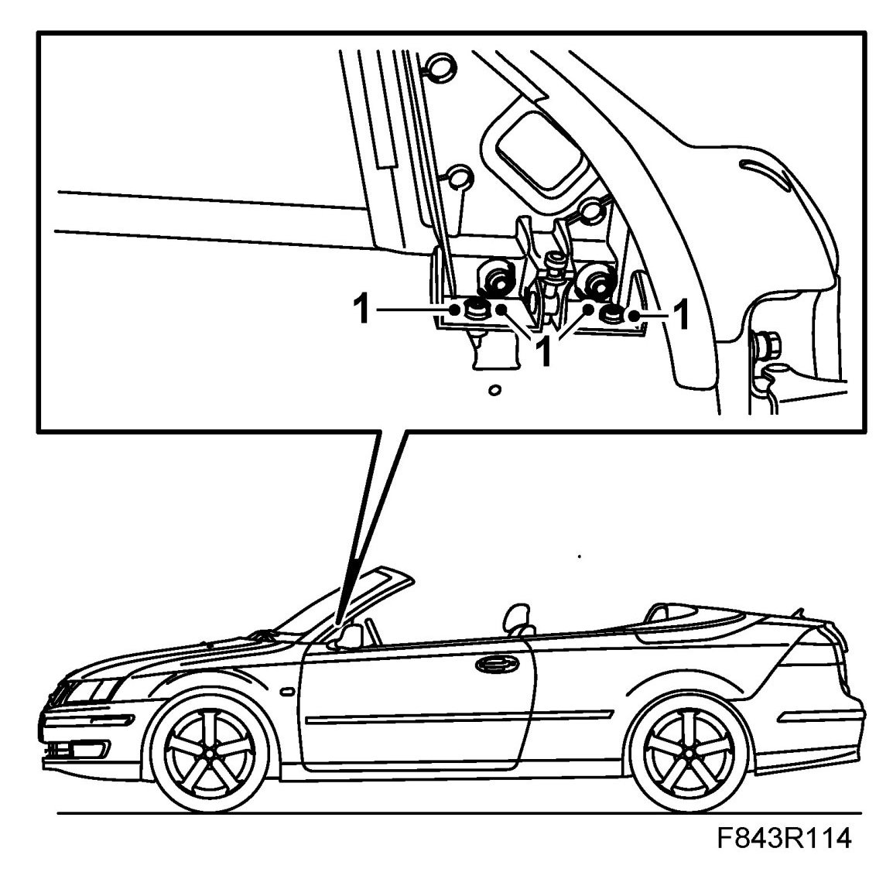

Door Mirror Base With Seal, CV
Door Mirror Base With Seal, CV
To remove
1. Remove Door mirror, CV.
2. Open the door window fully.
3. Note and mark the position of the door mirror mounting screws. Undo the screws and remove the mount.

To fit
1. Locate the door mirror mount in position and fit the screws. Ensure that the washers and screws are correctly positioned.

2. Fit Door mirror, CV.
Adjust the bracket if necessary, see Adjustment of windows and door mirror base seal.
Cars with pinch protection: Carry out Programming the pinch protection.